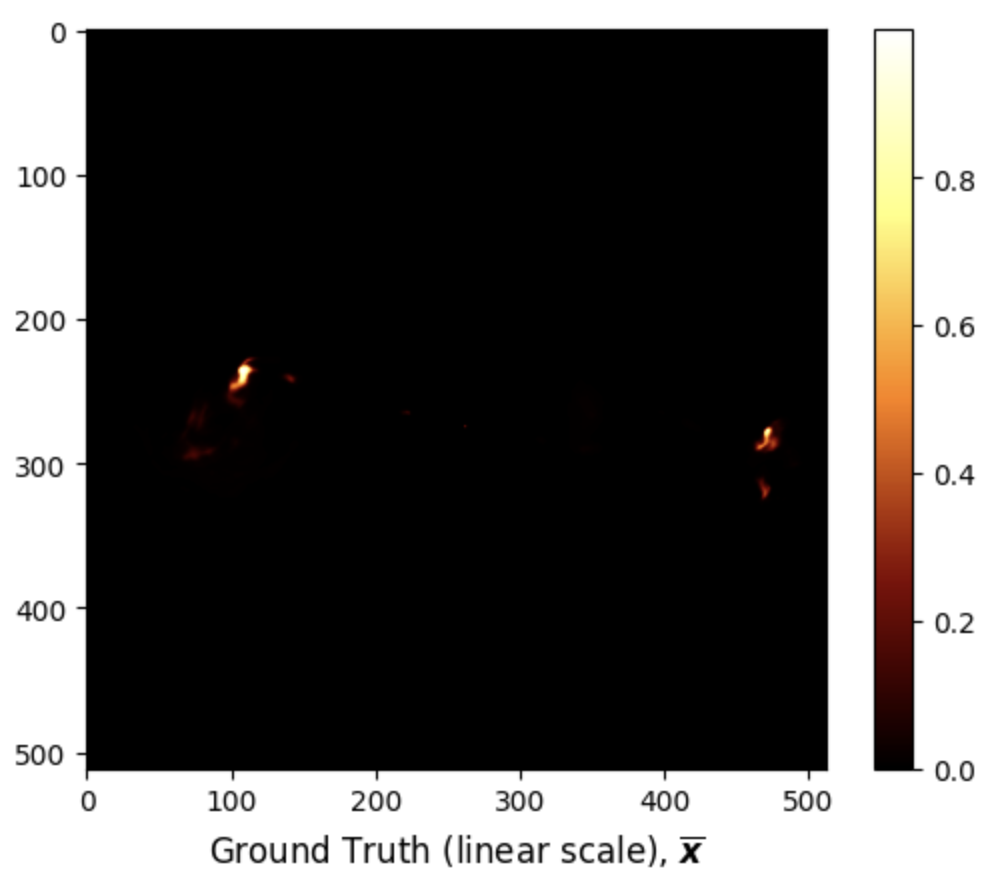
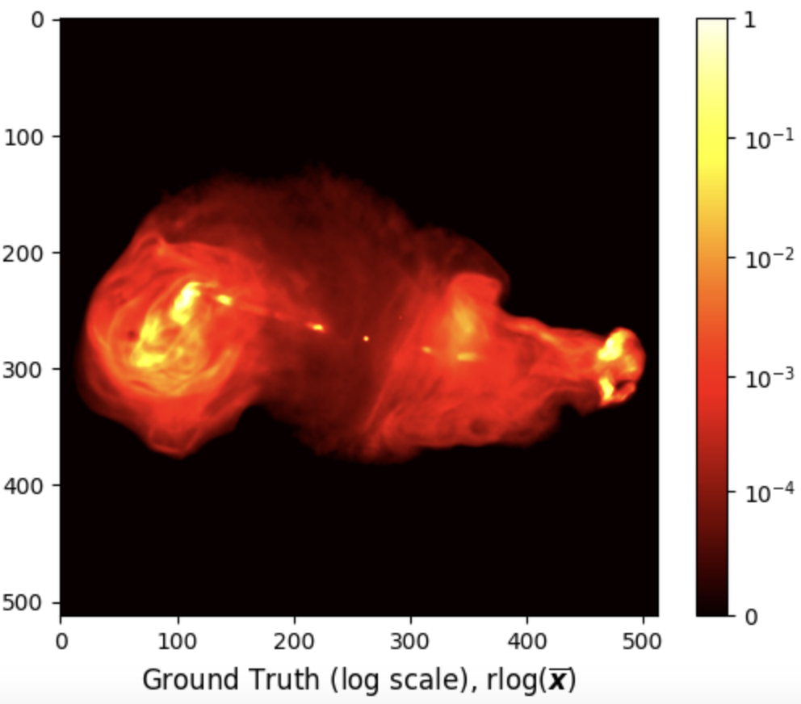
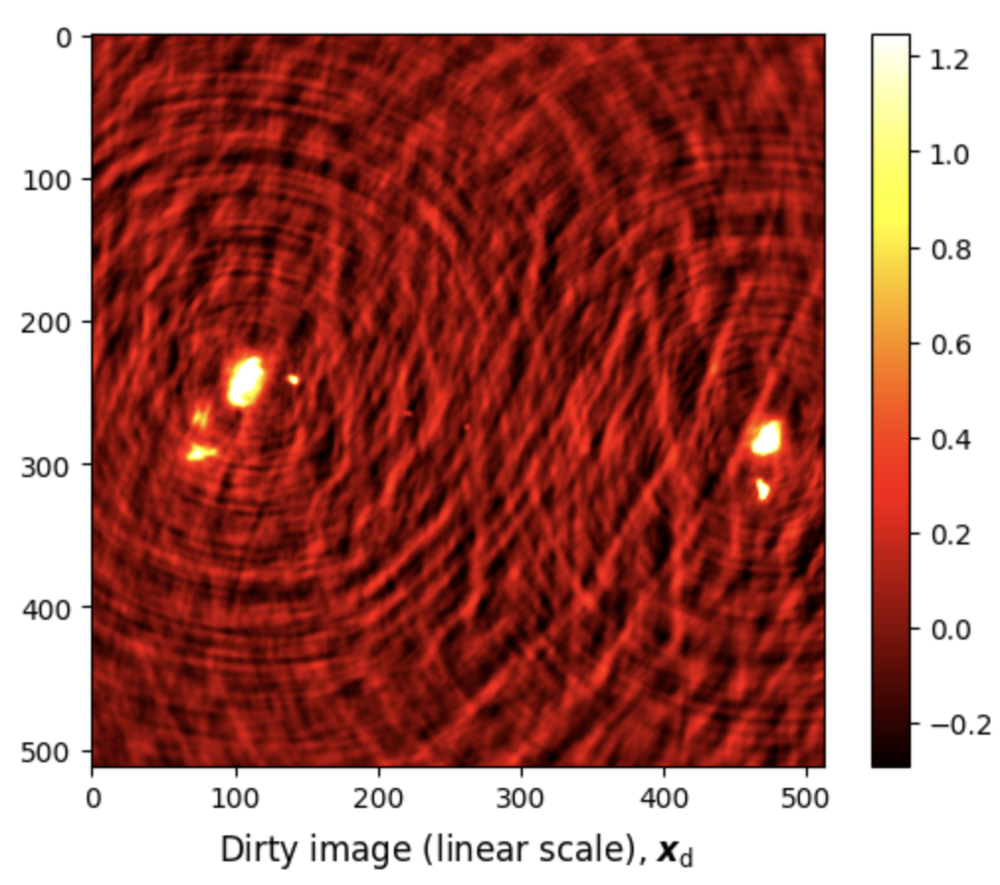
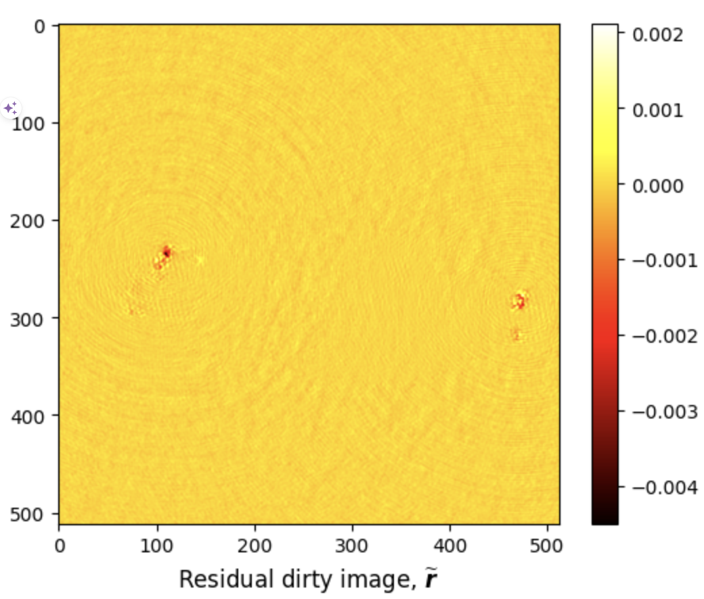

R2D2 Tutorial
Imaging with R2D2
The R2D2 algorithm takes a hybrid structure between a Plug-and-Play (PnP) algorithm and a learned
version of the well known Matching Pursuit algorithm. Its reconstruction is formed as a series of
residual images, iteratively estimated as outputs of Deep Neural Networks (DNNs) taking the previous
iteration’s image estimate and associated data residual as inputs. R2D2's primary application is to
solve high-resolution high-dynamic range inverse problems in synthesis imaging by interferometry (SII).
The details of R2D2 are discussed in the following papers.
[1] Aghabiglou, A., Chu, C. S., Dabbech, A. & Wiaux, Y., The R2D2 deep neural network series paradigm
for fast precision imaging in radio astronomy, ApJS, 273(1):3, 2024,
arXiv:2403.05452 |
DOI:10.3847/1538-4365/ad46f5
[2] Dabbech, A., Aghabiglou, A., Chu, C. S. & Wiaux, Y., CLEANing Cygnus A deep and fast with R2D2,
ApJL, 2024 May 7;966(2):L34., ArXiv:2309.03291 |
DOI:10.3847/2041-8213/ad41df
SII Inverse Problem
The imaging inverse problem in SII can be formulated as:
\[
{\boldsymbol{y}} = {\boldsymbol{\Phi} {\boldsymbol{\bar{x}}} + \boldsymbol{n}}
\]
where \(\boldsymbol{y} \in \mathbb{C}^M\) is the measurement vector,
\(\boldsymbol{\bar{x}} \in \mathbb{R}^N\) is the unknown radio image,
\(\boldsymbol{\Phi} \in \mathbb{C}^{N \times M}\) is the measurement operator corresponding to
incomplete Fourier sampling, and \(\boldsymbol{n} \in \mathbb{C}^M\) is s a realisation of a random
Gaussian noise with standard deviation \(\tau\) and mean 0.
R2D2 aims to recover the unknown \(\boldsymbol{\bar{x}}\) from the measurements \(\boldsymbol{y}\).
R2D2's iteration structure
R2D2 consists of a series of \(I\) DNNs interleaved with \(I-1\) data fidelity steps. Each DNN \(\boldsymbol{N}_{\widehat{\boldsymbol{\theta}}^{(i)}}\), parametrized by \(\widehat{\boldsymbol{\theta}}^{(i)}\), takes the previous iteration's image estimate and associated residual dirty image as input. The latter is defined as: \[\boldsymbol{r}^{(i-1)} = \kappa \textrm{Re} \{\boldsymbol{\Phi}^\dagger (\boldsymbol{y} - \boldsymbol{\Phi} \boldsymbol{x}^{(i-1)})\}.\] The image estimate and residual dirty image are initialized to \(\boldsymbol{x}^{(0)} = \boldsymbol{0}\) and \(\boldsymbol{r}^{(0)} = \boldsymbol{x}_{\textrm{d}}\), i.e. the dirty image, respectively. At each iteration \(i\), the image estimate is updated as: \[\boldsymbol{x}^{(i)} = \boldsymbol{x}^{(i-1)} + \boldsymbol{N}_{\widehat{\boldsymbol{\theta}}^{(i)}}(\boldsymbol{x}^{(i-1)}, \boldsymbol{r}^{(i-1)}).\]
Clone Repository
You can clone the repository to the current directory by running the command below.

git clone --recurse-submodules https://github.com/basp-group-private/R2D2-RI.git cd ./R2D2-RI
The flag "--recurse-submodules" is required to clone the sub-module RI-measurement-operator.
Dependencies
PyTorch and torchvision should be installed following instruction by PyTorch to ensure the latest version compatible with your CUDA version is installed. If your CUDA version is older than 11.8, then you can find the instruction here. For example, to install PyTorch with CUDA version 11.6, use the command below:
pip install torch==1.13.1+cu116 torchvision==0.14.1+cu116 --extra-index-url https://download.pytorch.org/whl/cu116
All other required Python packages are listed in the requirements.txt file. Python version 3.10 or higher is required.
Install the packages using the command below:
pip install -r requirements.txtPre-trained R2D2 checkpoints
The pre-trained checkpoints for R2D2 (15 iterations), R3D3 (3 UNet layers, 7 iterations) and R3D3 (6 UNet layers, 8 iterations) are available at the DOI: 10.17861/99cbe654-5071-4625-b59d-a26c790cbeb4. In this tutorial, we will work with R2D2.
Download the pretrained R2D2 models.
r2d2_ckpt_path=./ckpt/R2D2/ mkdir -p $r2d2_ckpt_path wget https://researchportal.hw.ac.uk/files/110702953/v1_R2D2_15UNets.zip -P $r2d2_ckpt_path # pre-trained model for R2D2 # Extract the files unzip $r2d2_ckpt_path/v1_R2D2_15UNets.zip -d $r2d2_ckpt_path # Remove the zip file rm $r2d2_ckpt_path/v1_R2D2_15UNets.zip
The checkpoints for R3D3 (3 UNet layers, 7 iterations) and R3D3 (6 UNet layers, 8 iterations) can be downloaded and extracted in the same manner.
Test Dataset
For this tutorial, we provide a test dataset composed of a ground truth image in .fits format and its associated measurement file in .mat format.
The ground truth \(\boldsymbol{\bar{x}}\) is a post-processed image of the radio galaxy 3c353 of size \(N = 512 \times 512\).
The measurements are generated using a simulated Fourier sampling pattern of MeerKAT.
First, let us read and visualise the ground truth.
from astropy.io import fits import matplotlib.pyplot as plt gdth = fits.getdata('data/3c353/3c353_GTfits.fits') fig, ax = plt.subplots() pcm = ax.imshow(gdth, cmap='afmhot') cb = plt.colorbar(pcm, ax=ax) titl = ax.set_title(r'Ground Truth, $\overline{\boldsymbol{x}}$', y=-0.15)

Given the large dynamic range of the ground truth, only bright features are visible in linear scale. For a better visualisation, we map its pixels intensities to the logarithmic scale using the function below: \[\textrm{rlog}(\boldsymbol{\bar{x}}) = \boldsymbol{\bar{x}}_{\textrm{max}} \log_{a}(\frac{a}{\boldsymbol{\bar{x}}_{\textrm{max}}} \boldsymbol{\bar{x}} + \boldsymbol{1}),\] where \(a>0\) is the dynamic range of the ground truth \(\boldsymbol{\bar{x}}\) and \(\boldsymbol{\bar{x}}_{\textrm{max}}\) is the maximum intensity. In the case of the considered ground truth \(a=2500\) and \(\boldsymbol{\bar{x}}_{\textrm{max}}=1\).
import numpy as np import matplotlib.colors as colors class rlog(colors.Normalize): def __init__(self, a): self.a = a super().__init__(vmin=None, vmax=None, clip=False) def __call__(self, im): if len(im) == 0: return im im_max = np.max(im) if im_max < 1/self.a: return im else: return im_max * np.log10(self.a * im / im_max + 1) / np.log10(self.a) def inverse(self, im): return (self.a**(im) - 1) / self.a a = 1e5 norm = rlog(a) fig, ax = plt.subplots() pcm = ax.imshow(gdth, norm=norm, cmap='hot') cb = plt.colorbar(pcm, ax=ax) ticks = [np.log10(a * tick + 1)/np.log10(a) for tick in [0, 1e-4, 1e-3, 1e-2, 1e-1, 1]] ticks[-1] = 1 cb.set_ticks(ticks) cb.set_ticklabels([0, '$10^{-4}$', '$10^{-3}$', '$10^{-2}$', '$10^{-1}$', '1']) title = ax.set_title(r'Ground Truth in log scale, $\text{rlog}(\overline{\boldsymbol{x}})$', y=-0.15)

The test measurement file in .mat format associated with the above ground truth can be loaded via the command below.
from scipy.io import loadmat meas = loadmat('data/3c353/data_3c353.mat') for k, v in meas.items(): if not k.startswith('_'): if max(v.shape) == 1: print(f"{k}: {v.item():.4e}") else: print(f"{k}: {v.shape}, {type(v)}")
u: (209840, 1)
v: (209840, 1)
maxProjBaseline: 1.2216e+05
w: (209840, 1)
y: (209840, 1)
nW: 3.4893e+01
nWimag: (209840, 1)
The expected fields are listed below.
- "y", measurement/data vector.
- "u": \(\boldsymbol{u}\) coordinates in units of the observation wavelength.
- "v": \(\boldsymbol{v}\) coordinates in units of the observation wavelength.
- "w": \(\boldsymbol{w}\) coordinates in units of the observation wavelength.
- "nW": noise-whitening vector, known as the natural weights, corresponding to the inverse of the noise standard deviation. During imaging, these weights are applied to the measurements and injected into the measurement operator model.
- "nWimag": imaging weight vector, compensating for the non-uniform Fourier sampling and enhancing the effective resolution of the observations. The vector is optional and can be computed directly in the R2D2 imager.
- "frequency": the observation frequency in Hz.
- "maxProjBaseline": is the maximum projected baseline in units of the observation wavelength, formally it equals to max \(\max\{\sqrt{\boldsymbol{u}^2 + \boldsymbol{v}^2}\}\). Hence, it represents the spatial bandwidth of the Fourier sampling.
The collection of the \((\boldsymbol{u}, \boldsymbol{v})\) points constitutes the 2D Fourier sampling pattern also known as the \(uv\)-coverage.
import matplotlib.pyplot as plt from scipy.io import loadmat meas = loadmat('data/3c353/data_3c353.mat') u = meas['u'] v = meas['v'] # Create a scatter plot plt.figure() plt.scatter(u, v, s=0.1) # Set axis properties plt.axis('equal') plt.axis('square') plt.axis('tight') # Add labels and title plt.xlabel('u') plt.ylabel('v') plt.title('uv coverage') # Show the plot plt.show()

In the context of narrow-field SII, the effect of the \(\boldsymbol{w}\) coordinates is negligeable, and is therefore not considered in the measurement operator model.
Scripts to generate synthetic measurement files as well as to convert real Measurement Sets (MS) to .mat files readable by this repository are available.
Image Reconstruction
The R2D2 imager can be run by calling the file src/imager.py while specifying the mandatory
configuration file yaml_file in .yaml file format.
Arguments
The imaging script expects a configuration file in .yaml file format, an example can be found
in config/imaging/r2d2.yaml. The required arguments are:
-
data_file, the file in.matformat containing datay, sampling patternuandvand the natural weightsnW. -
output_path, the directory at where resulting reconstruction and residual images will be saved. -
super_resolution, the super resolution factor, default to 1.5. -
im_dim_x, image width, default to 512. -
im_dim_y, image height, default to 512. -
series, R2D2 or R3D3, default to R2D2. -
num_iter, the number of \(I\) DNNs in the series, default to 15. -
layers, the number of \(J\) network layers in the DNN architecture, default to 1. -
ckpt_path, the directory containing the DNN checkpoints. -
weight_type, types of imaging weights, choose from briggs, uniform and none, default to briggs.
Note that \(J\) is deteremined before training the DNNs and is consistent for all DNNs in the series, while \(I\) is set during the training process in which the \((I+1)\)-th DNN shows no improvement in the S/R and logS/R metrics.
If weight_type is briggs, additional arguments are:
-
weight_gridsize, default to 2. -
weight_robustness, default to 0.
There are also some optional arguments:
-
gdth_file, the ground truth image file, used for computation of SNR metric. -
src_name, the name of the source, the output folder will be named as. -
save_all_outputs, to determine if all intermediate reconstruction and residual images should be saved, default toFalse. -
target_dynamic_range, dynamic range of the ground truth image, used for computation of logSNR metric along withgdth_file. -
meas_op_on_gpu, to determine if the measurement operator would be working on GPU, default toFalse.
Imaging with R2D2
R2D2 imager is launched via the python file imager.py. This function takes as input a
configuration file in .yaml format, where all parameters involved in the imaging process are defined
and set to default values where relevant. The readers are directed to the
README for more information
on the content of the configuration file.
In this tutorial, we use the example configuration file ./config/imaging/r2d2.yaml. The function run_imager
also accepts optional name-argument pairs to overwrite corresponding fields in the configuration file.
The user must provide as input the target image size and the pixel size in arcsecond, either directly
in the configuration file or as input argument parsed to the function run_imager. When the pixel size is
not known, the user can instead specify the ratio between the spatial Fourier bandwidth of the
target/ground-truth image and the bandwidth of the Fourier sampling pattern. We refer to this ratio as
the superresolution factor. In such case, the pixel size in arcsecond is automatically derived from
the superresolution factor as:
\[\textrm{imPixelSize} = \frac{180 \times 3600}{\pi} \times \frac{1} {2 \times\textrm{maxProjBaseline} \times {\textrm{superresolution}
}}\]
For our test dataset, the reconstructed image size is set to \(N=512 \times 512\) same as the ground
truth, and the pixel size is set such that \(\textrm{superresolution}=1.0\) (i.e. the spatial bandwidth of the
Fourier sampling equals the Fourier bandwidth of the ground-truth/target image). Natural weighting
is considered during imaging by default.
The R2D2 imager can be run by calling the following command, using the test dataset and configuration
file provided in this tutorial:
python3 src/imager.py --yaml_file config/imaging/r2d2.yaml
R3D3, as well as R2D2Net and UNet, can be easily run by changing the ckpt_path, series and layers argument.
R2D2 results
R2D2 imager provides as output both the point spread function (just R2D2-Net and R3D3 realization) and the dirty image saved in .fits format.
- The point spread function (PSF) is defined as \(\boldsymbol{h} = \kappa\textrm{Re}\{\boldsymbol{\Phi}^{\dagger}\boldsymbol{\Phi}\boldsymbol{\delta}\}\) , with \(\boldsymbol{\delta}\) a Dirac delta image (with value 1 at its centre and 0 otherwise), and \(\kappa\) a normalisation factor ensuring its peak value is equal to 1.
- The dirty image is defined as \(\boldsymbol{x}_d = \kappa \textrm{Re} \{\boldsymbol{\Phi}^{\dagger} \boldsymbol{y}\} \).
dirty = fits.getdata('data/3c353/results/R2D2/3c353/dirty_normalised.fits') fig, ax = plt.subplots() pcm = ax.imshow(dirty, cmap='viridis') cb = plt.colorbar(pcm, ax=ax) title = ax.set_title(r'Dirty image, $\boldsymbol{x}_{\text{d}}$', y=-0.15)

import matplotlib.pyplot as plt from astropy.io import fits # Read the FITS file psf = fits.getdata("./results/3c353/psf.fits") # Create a figure plt.figure() # Display the image data plt.imshow(psf, cmap='hot', aspect='equal') # Set the title plt.title("psf") # Show the plot plt.show()

R2D2 reconstructed images are saved in .fits format.
- The estimated model image \(\boldsymbol{\tilde{x}}\).
- The associated residual dirty image (i.e. normalised back-projected data residual) \(\boldsymbol{\tilde{r}} = \kappa(\textrm{Re} \{\boldsymbol{\Phi}^{\dagger} \boldsymbol{y}\} -\textrm{Re}\{\boldsymbol{\Phi}^{\dagger}\boldsymbol{\Phi} \boldsymbol{\tilde{x}}\}) \).
from astropy.io import fits import numpy as np def snr(true, y, e=1e-9): return 20 * np.log10(np.linalg.norm(true.flatten()) / (np.linalg.norm(true.flatten() - y.flatten()) + e)) rec = fits.getdata('data/3c353/results/R2D2/3c353/r2d2_final_model.fits') gdth = fits.getdata('data/3c353/3c353_GTfits.fits') SNR = snr(gdth, rec) logSNR = snr(rlog(gdth), rlog(rec)) print(f'R2D2 reconstruction metrics: SNR {SNR} dB; logSNR 28.6 dB')
R2D2 reconstruction metrics: SNR 36.2 dB; logSNR {logSNR} dB
a = 1e5 norm = rlog(a) fig, ax = plt.subplots() pcm = ax.imshow(rec, norm=norm, cmap='hot') cb = plt.colorbar(pcm, ax=ax) ticks = [np.log10(a * tick + 1)/np.log10(a) for tick in [0, 1e-4, 1e-3, 1e-2, 1e-1, 1]] ticks[-1] = 1 cb.set_ticks(ticks) cb.set_ticklabels([0, '$10^{-4}$', '$10^{-3}$', '$10^{-2}$', '$10^{-1}$', '1']) title = ax.set_title(r'Reconstructed image in log scale, $\text{rlog}(\widetilde{\boldsymbol{x}})$', y=-0.15)

The residual dirty image is shown below.
dirty = fits.getdata('data/3c353/results/R2D2/3c353/r2d2_final_residual.fits') fig, ax = plt.subplots() pcm = ax.imshow(dirty, cmap='viridis') cb = plt.colorbar(pcm, ax=ax) title = ax.set_title(r'Residual dirty image, $\boldsymbol{r}^{(15)}$', y=-0.15)

Additional Functionalities
The code supports data-weighting schemes during imaging (uniform or Briggs weighting). It provides the functionality to compute the imaging weights if not available in the input data file.
R2D2 tutorial in Jupyter notebook
You can download this tutorial in .ipynb format and launch it directly in Jupyter Notebook
 .
.